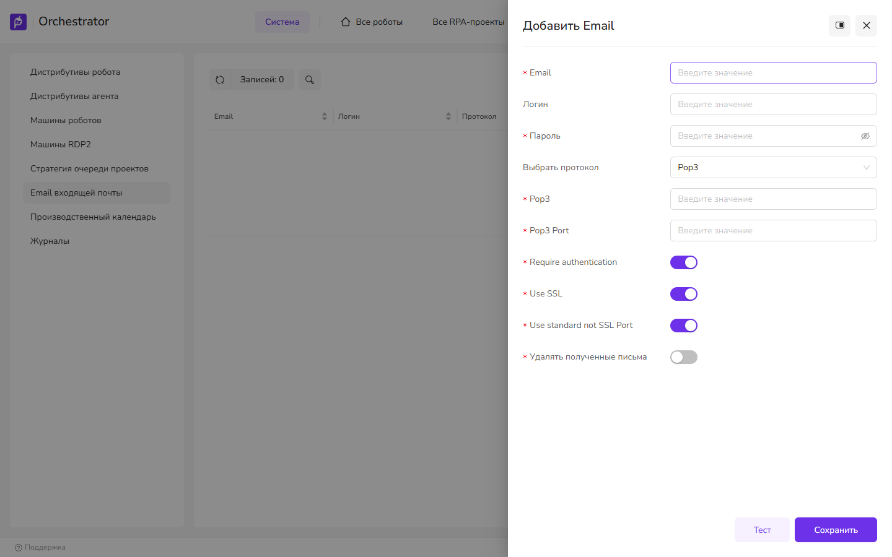

Не срабатывает триггер по почте
Триггер «Запуск при получении Email» опрашивает почтовый ящик со стороны WebApi по POP3, IMAP или Exchange (EWS). Если письмо пришло, а робот не запустился, причина — в подключении к почте или в отборе писем.
Симптомы
- Письмо в ящике есть, а задание не запускает проект — Что проверить по порядку.
- Триггер работал и перестал срабатывать после смены пароля, обновления ОС или почтового сервера — Что проверить, шаги 1–3; на Linux — Аутентификация на Linux.
- Проверка кнопкой Тест в настройках ящика завершается ошибкой или проходит, но триггер не срабатывает — Что проверить, шаги 2–5.
- В журнале WebApi: «Max unseen messages count limit exceeded» — Много непрочитанных писем.
- Триггеры срабатывают с опозданием на часы, отставание растёт; в журнале WebApi: «Переполнение очереди событий от триггеров 10000. Потеря события.» — Переполнение очереди событий триггеров.
- При частых письмах проект получает из ресурса данные не того письма, часть писем роботом не обрабатывается — Данные письма в ресурсе перезаписываются.
- В журнале WebApi ошибка о папке со стеком вызовов
MailKit.Net.Imap— Что проверить, шаг 5.
Вероятные причины
- WebApi не подключается или не проходит аутентификацию на почтовом сервере — шаги 1–3 раздела Что проверить.
- В папке слишком много непрочитанных писем (IMAP и Exchange) — исправление.
- Очередь опросов почты в WebApi не успевает разбираться: много триггеров с коротким интервалом опроса — исправление.
- В ящике нет папки, указанной в триггере или в настройках ящика — шаг 5.
- Письмо не подходит под фильтры От и Тема — шаг 4.
- Данные письма в ресурсе перезаписываются следующим письмом до того, как проект их прочитал — исправление.
- Письмо уже обработано раньше: письмо с тем же Message-ID повторно не обрабатывается; письмо помечено прочитанным до опроса — Как письма помечаются обработанными.
- На Linux не подходит механизм аутентификации (NTLM, GSSAPI) — исправление.
Что проверить
- Откройте настройки ящика на экране Email входящей почты и нажмите Тест. «Почтовое соединение установлено успешно»
- Если тест не прошёл, текст ошибки — это ответ почтового сервера или сетевой библиотеки. Проверьте адрес, порт, логин и пароль. Если Email и логин для входа различаются, заполните Логин.
- Тест проверяет только подключение и вход. Он не проверяет папку и число непрочитанных писем. Если тест прошёл, найдите в журнале WebApi ошибки по времени опроса: при сбое опроса записывается текст исключения без пояснений. Ошибок подключения нет
- Проверьте фильтры триггера. От — список адресов через запятую, сравнение по вхождению строки. Тема — регулярное выражение или подстрока. Тестовое письмо подходит под оба фильтра
- Проверьте папку: берётся папка из триггера, иначе папка ящика, иначе
INBOX. Ошибка со стеком вызововMailKit.Net.Imapотносится к опросу ящика по IMAP, а не к папкам Оркестратора. Папка с таким именем есть в ящике и доступна учётной записи - Найдите в журнале WebApi строки «Max unseen messages count limit exceeded» и «Переполнение очереди событий от триггеров». Проверьте в событиях Оркестратора «Увеличение очереди событий от триггеров» (9016) и «Переполнение очереди событий от триггеров» (9018). Лимит непрочитанных писем не превышен, очередь событий не растёт
- Если триггер записывает письмо в ресурс, проверьте значение Максимальное кол-во писем, забираемых за один раз и Разрешить наложение в задании. Сопоставьте время срабатываний триггера и фактических запусков. Каждому письму соответствует свой запуск

Как исправить
Много непрочитанных писем
Для IMAP и Exchange, если в папке непрочитанных писем столько же или больше, чем Triggers:Email:MaxFolderUnseenMessagesCount (по умолчанию 100), опрос прерывается и ничего не обрабатывается. В журнале: «Max unseen messages count limit exceeded. Current limit = …, unseen messages count = …». Разберите или пометьте прочитанными старые письма, либо увеличьте параметр в конфигурации WebApi и перезапустите WebApi.
В Docker параметр задаётся переменной Triggers__Email__MaxFolderUnseenMessagesCount.
Пока лимит превышен, триггер не забирает из папки ни одного письма, в том числе новые. Для Exchange учитываются только непрочитанные письма, полученные позже последнего обработанного триггером.
Сообщение записывается только в журнал WebApi с уровнем Error: события Оркестратора для него нет, подписаться на него нельзя. Для оповещения настройте отбор этой строки во внешней системе сбора журналов.
Переполнение очереди событий триггеров
Опросы почты всех триггеров ставятся в общую очередь в памяти процесса WebApi, отдельную от очереди триггеров расписания. Очередь разбирается по одному опросу: очередной опрос берётся раз в Assignment:ChainLimiterTriggerEventTime миллисекунд (по умолчанию 500) и только после завершения предыдущего. Если триггеров много, а интервал опроса короткий (по умолчанию 20 секунд), опросы поступают быстрее, чем разбираются, и срабатывания запаздывают.
Размер очереди ограничен параметром Assignment:MaxTriggerQueueLength (по умолчанию 10000). При достижении предела новое событие отбрасывается, в журнал WebApi записывается «Переполнение очереди событий от триггеров {N}. Потеря события.», в события Оркестратора — «Переполнение очереди событий от триггеров» (9018). При росте очереди через каждую четверть предела создаётся событие «Увеличение очереди событий от триггеров» (9016), при уменьшении — «Уменьшение очереди событий от триггеров» (9017).
- Устраните переполнение ящиков непрочитанными письмами (Много непрочитанных писем): опрос такого ящика занимает очередь, но писем не забирает.
- Увеличьте у триггеров Интервал опроса (сек) почтового сервера и сократите число триггеров, которые опрашивают один ящик. События 9016 перестают появляться, затем появляется 9017
- Накопленная очередь хранится только в памяти: она сбрасывается перезапуском WebApi. Без устранения причины очередь заполнится снова. После перезапуска срабатывания идут без задержки
Очередь используется, когда Assignment:ChainLimiterTriggerEventEmail = true и Assignment:ChainLimiterTriggerEventTime больше 0. В классе настроек значение ChainLimiterTriggerEventEmail по умолчанию false, в Dockerfile поставки задано Assignment__ChainLimiterTriggerEventEmail=True.
Данные письма в ресурсе перезаписываются
Если в триггере указан Ресурс, при каждом подходящем письме в него записывается JSON с полями Email, From, Subject, TextBody, MessageId, MessageDate (без вложений). Тип ресурса должен допускать JSON-объект, иначе в журнал WebApi записывается «Тип ассета с Id=… не позволяет сохранить Email.».
По IMAP и Exchange за один опрос забирается до Максимальное кол-во писем, забираемых за один раз подходящих писем (по умолчанию 5). Все они помечаются прочитанными, а ресурс перезаписывается каждым письмом по очереди: в нём остаётся последнее. Триггер при этом срабатывает один раз. Запись выполняется и тогда, когда запуск пропускается из-за запрета наложения, поэтому к началу выполнения проекта в ресурсе может оказаться другое письмо.
- Задайте в триггере Максимальное кол-во писем, забираемых за один раз = 1. Каждый опрос даёт не больше одного срабатывания и одной записи в ресурс
- Задайте Интервал опроса (сек) почтового сервера больше времени запуска и выполнения проекта. Если проект ждёт в очереди проектов, это не исключает перезапись.
- Для потока писем используйте схему с диспетчером: проект, запускаемый триггером, сразу читает ресурс и перекладывает данные письма в очередь обмена данными, а обработку выполняет отдельный проект по триггеру очереди.
Как письма помечаются обработанными
IMAP и Exchange: подходящие письма помечаются прочитанными. При Удалять полученные письма они удаляются (Exchange — переносятся в удалённые). По POP3 письма не помечаются и удаляются только при этом флаге. Если письма в ящике помечает прочитанными пользователь или другая программа раньше Оркестратора, триггер может их пропустить.
Аутентификация на Linux
| Параметр | Назначение | По умолчанию |
|---|---|---|
Triggers:Email:UseManagedNtlm | Включает управляемую реализацию NTLM в .NET. Читается при старте WebApi, требуется перезапуск | false |
Triggers:Email:RemoveGSSAPI, RemoveNTLM | Исключают механизм перед входом по IMAP. Учитываются и кнопкой Тест | false |
Triggers:Email:RemoveAuthenticationMechanisms | Список механизмов через запятую, которые исключаются перед входом по IMAP | не задан |
Для Exchange на Linux при ошибке 401 подсказка в UI4 рекомендует установить пакет gssntlmssp.
Опрос и производительность
| Параметр | Назначение | По умолчанию |
|---|---|---|
| Интервал опроса (сек) почтового сервера в триггере | Как часто опрашивается ящик, 1–600 с. Общее значение — Triggers:Email:IntevalInSeconds | 20 |
| Максимальное кол-во писем, забираемых за один раз | Сколько писем забирается за один опрос. Общее значение — Triggers:Email:WindowSize | 5 |
Triggers:Email:UseProtocolLogger | Записывает протокол обмена с сервером в imap.log или pop3.log — для диагностики | false |
У секции Triggers:Email нет значений по умолчанию, если её нет в конфигурации: значения из таблицы действуют, только когда секция задана. В Dockerfile поставки она задаётся переменными Triggers__Email__*.